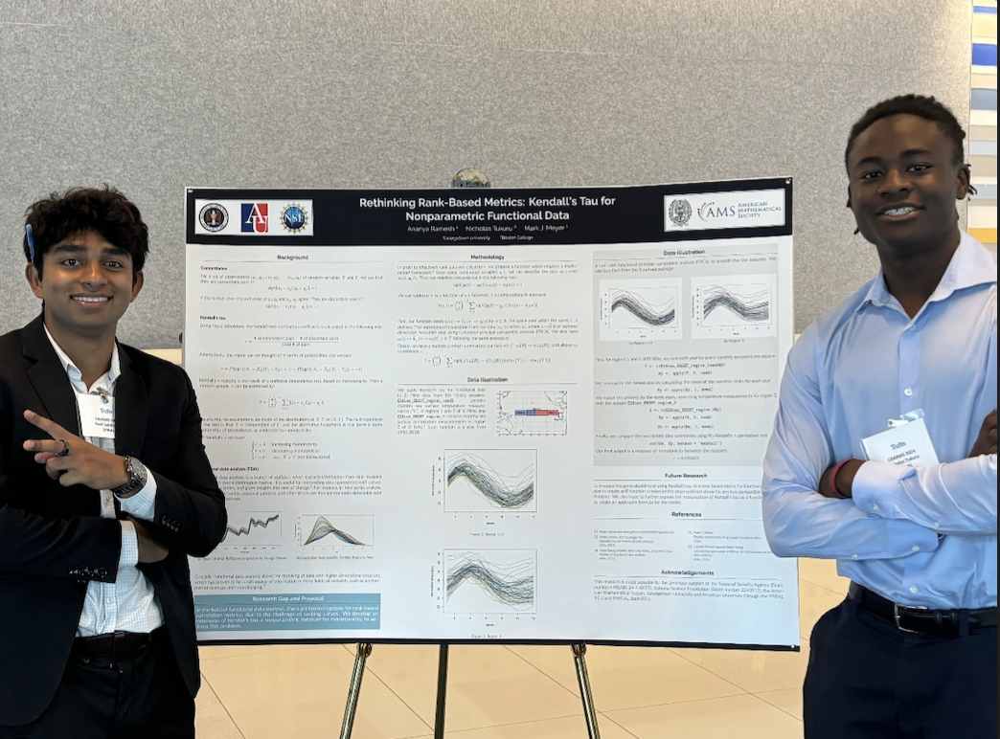

Rishi Siddharth
data / policy / bay area
I am a Consultant at Zinnov, working across globalization strategy and private equity advisory for technology companies and investor strategy. I evaluate global operating models, talent markets, and technology capabilities for enterprise clients and investors. I graduated from American Univeristy, and also spent a year at the London School of Economics. Prior to that, I completed research with Nasa and the NSF/NSA, worked at an AI startup, and built climate data infrastructure at LSE through the transitition pathway initative. I am originally from Menlo Park, California. I love soccer, reading, and hiking.
The world is changing rapidly, and I am excited to be apart of it.
Life



Education


Interests
Global life expectancy
73 years
up from 29 in 1800
Global literacy rate
87%
up from 12% in 1820
source: Our World in Data